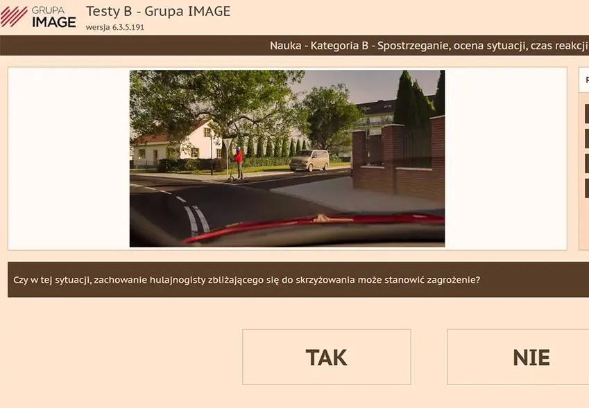

Egzamin teoretyczny w Gdańsku – nowe pytania (2026)

W skrócie: Nie, w Polsce nie wprowadzono osobnego testu rozpoznawania zagrożeń, takiego jak brytyjski Hazard Perception Test. Od 23 grudnia 2025 r. w bazie pytań egzaminacyjnych jest 12 pytań sytuacyjnych typu „Czy w tej sytuacji … może stanowić zagrożenie?”, rozwiązywanych w klasycznej formule tak/nie.
Egzamin teoretyczny w Gdańsk (2026) – zmiany w bazie pytań, wdrożone od grudniu 2026 przez Ministerstwo Infrastruktury, wyjaśnia OSK Tailor Nauka Jazdy Gdańsk.
W okresie grudzień / styczeń 2026 pojawiło się wiele emocjonujących komentarzy dotyczących wprowadzenia do państwowego egzaminu teoretycznego na prawo jazdy, pytań dotyczących tzw. Test Postrzegania Zagrożeń (eng. Hazard Perception Test). Wiele dostępnych w internecie komentarzy wręcz sugeruje, że w Polsce wprowadzono rozwiązanie z Wielkiej Brytanii.
Jak jest naprawdę?
Czy kursanci zdający egzamin w PORD w Gdańsku mają się czego obawiać?
Czy szkoły nauki jazdy muszą zmieniać sposób szkolenia?
Różnica między zagrożeniem a ryzykiem w ruchu drogowym
Choć w języku potocznym pojęcia zagrożenie i ryzyko bywają używane zamiennie, to w bezpieczeństwie ruchu drogowego słowa te oznaczają coś zupełnie innego.
🟥 Zagrożenie = obiektywny czynnik
Zagrożenie to obiektywny czynnik lub element, który może doprowadzić do zdarzenia niebezpiecznego lub wypadku.
👉 Zagrożenie istnieje niezależnie od tego, czy ktoś ma z nim kontakt czy nie.
Przykłady zagrożeń:
- pieszy stojący przy krawędzi jezdni,
- hulajnoga wyjeżdżająca z drogi wewnętrznej,
- silny wiatr boczny przy obecności motocyklisty,
- ograniczona widoczność za zakrętem,
- pojazd nadjeżdżający lewym pasem.
📌 Zagrożenie istnieje niezależnie od kierowcy – nawet jeśli jedziesz wolno i ostrożnie.
🟧 Ryzyko = prawdopodobieństwo
Ryzyko to prawdopodobieństwo, że zagrożenie przerodzi się w realne zdarzenie oraz skutki tego zdarzenia.
👉 Odpowiada na pytanie:
„Jak duża jest szansa, że coś się stanie – i jak poważne mogą być skutki?”
Na ryzyko wpływaj m.in.:
- prędkość jazdy,
- warunki atmosferyczne,
- odległość od pojazdu poprzedzającego,
- czas reakcji kierowcy,
- zachowanie innych uczestników ruchu,
- stan nawierzchni.
📌 Ryzyko zależy od zagrożenia i kierowcy – można je zwiększać lub zmniejszać.
🔑 Najważniejsza różnica?
Zagrożenie to POTENCJAŁ niebezpieczeństwa, a ryzyko to PRAWDOPODOBIEŃSTWO i SKALA skutków.
Czy w Polsce wprowadzono test rozpoznawania zagrożeń?
Nie.
To najważniejsza informacja, którą warto jasno podkreślić.
W Wielkiej Brytanii Hazard Perception Test jest osobnym modułem egzaminu teoretycznego. Kandydat ogląda klipy wideo i musi w odpowiednim momencie kliknąć, gdy zauważy rozwijające się zagrożenie. Liczy się czas reakcji i punktacja.
‼️ W Polsce nie wprowadzono takiego egzaminu.
To, co faktycznie się pojawiło, to pytania egzaminacyjne dotyczące oceny zagrożenia, osadzone w krótkich scenariuszach wideo i rozwiązywane w klasycznej formule tak / nie.
Na czym polegają nowe pytania o zagrożenia?
Od 23 grudnia 2025 r. w bazie pytań egzaminacyjnych pojawił się zestaw 12 pytań sytuacyjnych, których wspólny mianownik brzmi:
„Czy w tej sytuacji … może stanowić zagrożenie?”
Pytania dotyczą między innymi:
- pieszych (np. osoba biegnąca chodnikiem),
- mikromobilności (hulajnogi elektryczne, użytkownicy Urządzeń Transportu Osobistego),
- pojazdów ciężkich i nietypowych (koparko-ładowarka, pojazd członowy),
- warunków atmosferycznych (np. silny wiatr boczny i motocyklista),
- zachowań w ruchu drogowym (pojazd poruszający się poboczem lub lewym pasem),
- codziennych sytuacji znanych z miejskiej jazdy.
To pytania sprawdzające świadomość sytuacyjną, a nie refleks czy pamięć definicji.
Czy to nowość w szkoleniu na prawo jazdy?
Dla kursu w OSK Tailor Nauka Jazdy Gdańsk – nie.
Rzetelne szkolenie teoretyczne od lat opiera się na tych samych zasadach:
- zasada szczególnej ostrożności,
- zasada ograniczonego zaufania,
- przewidywanie zachowań pieszych i innych uczestników ruchu,
- dostosowanie prędkości do warunków,
- rezygnacja z manewru w sytuacji niepewnej.
Nowe pytania po prostu mocniej akcentują praktyczne myślenie, które i tak powinno być podstawą szkolenia.
Dlaczego egzamin idzie w stronę analizy zagrożeń?
Zmiany nie biorą się znikąd.
25 listopada 2025 r. weszła w życie nowa dyrektywa UE dotycząca praw jazdy, która podkreśla znaczenie:
- mikromobilności (hulajnogi elektryczne, Urządzeń Transportu Osobistego),
- rozproszenia uwagi (telefony, urządzenia elektroniczne),
- jazdy w tunelach, na podjazdach i zjazdach,
- martwego pola i systemów ADAS,
- interakcji z pojazdami o różnych gabarytach,
- praktycznego dostrzegania i przewidywania zagrożeń.
Nowa pula pytań egzaminacyjnych jest więc dostosowaniem do realiów współczesnego ruchu drogowego.
Co to oznacza dla kursantów w Gdańsku?
Dla osób szkolących się w OSK Tailor Nauka Jazdy Gdańsk zmiany są w dużej mierze naturalne. Na naszych kursach bezpieczeństwo jest najważniejsze dlatego nasi instruktorzy zawsze zwracają uwagę i uczą jak powinieneś:
- przewidywać zachowania pieszych i rowerzystów,
- reagować na użytkowników hulajnóg,
- analizować sytuację na zatłoczonych skrzyżowaniach,
- dostosowywać jazdę do zmiennych warunków atmosferycznych.
Dlatego uważamy, że nowe pytania egzaminacyjne są bliższe realnej jeździe po mieście, a nie abstrakcyjnej teorii.
Tematy, które słusznie wzmacniają nowe pytania to:
Przejazdy kolejowe
Widoczność, półzapory, wielotorowość, brak miejsca za przejazdem – sytuacje o wysokim ryzyku, gdzie błąd ma poważne konsekwencje.
Urządzenia Transportu Osobistego i wspomagające ruch
Hulajnogi elektryczne i urządzenia wspomagające ruch to codzienność w Trójmieście. Pytania pomagają uporządkować zasady bezpieczeństwa.
Analiza zagrożenia
Pytanie „czy to jest zagrożenie?” sprawdza umiejętność logicznego myślenia i przewidywania. Dlatego znajomość pojęcia „szczególna ostrożność” jest tak ważna.
Czy szkoły nauki jazdy muszą zmieniać program szkolenia?
Nie ma potrzeby zmiany programu – wystarczy przesunąć akcenty.
W praktyce oznacza to:
- więcej rozmów „co może się wydarzyć za chwilę”,
- myślenie warunkowe typu jeśli –> to,
- omawianie realnych sytuacji drogowych, a nie tylko definicji.
To dokładnie ten kierunek, który realizuje OSK Tailor Nauka Jazdy Gdańsk.
🔄 Podsumowanie zmian na egzaminie teoretycznym w Gdańsku (2026)
Nowe pytania na egzaminie teoretycznym to:
- nie jest żaden Test Postrzegania Zagrożeń na wzór Wielkiej Brytanii – Hazard Perception Test,
- nie rewolucja,
- nie powód do paniki.
To krok w stronę praktyki i bezpieczeństwa ruchu drogowego – czyli tego, co powinno być celem każdego dobrego szkolenia na prawo jazdy.
✅ Zapisz się na kurs w OSK Tailor Gdańsk!
FAQ – Najczęstsze pytania kursantów odnośnie zmian na egzaminie teoretycznym w Gdańsku (2026)
1. Czy nowe pytania egzaminacyjne są trudniejsze?
Nie. Pytania jedynie sprawdzają logiczne myślenie. Dobrze przygotowany kursant OSK Tailor Nauka Jazdy Gdańsk nie odczuje większych trudności.
2. Czy w Polsce wprowadzono Test Postrzegania Zagrożeń tzw. Hazard Perception Test?
Nie. To brytyjski moduł egzaminu teoretycznego. W Polsce mamy pytania o ocenę zagrożenia w formie tak/nie, osadzone w krótkich scenariuszach wideo.
3. Czy OSK Tailor Nauka Jazdy Gdańsk musi zmieniać program szkolenia?
Nie. Wystarczy, że korzystasz z naszych materiałów szkoleniowych w tym bloga. Dodatkowo nasze biuro i instruktorzy zawsze odpowiedzą na twoje pytania. OSK Tailor Nauka Jazdy Gdańsk zawsze dokłada wszelkich starań aby nasz kurs był jak najwyższej jakości. Dlatego właśnie nasza misja brzmi „PRAWO JAZDY NA MIARĘ”
4. Czego dotyczą nowe pytania egzaminacyjne?
Między innymi: pieszych, urządzeń transportu osobistego, urządzeń wspomagających ruch, pojazdów wolnobieżnych, warunków atmosferycznych, zachowań i sytuacji w ruchu drogowym.
5. Jak najlepiej przygotować się do nowych pytań na egzaminie teoretycznym na prawo jazdy w Gdańsku?
- Przeczytaj artykuł na blogu OSK Tailor Nauka Jazdy Gdańsk pt. Szczególna Ostrożność vs. Ostrożność
- Przemyśl powyższy artykuł i przećwicz myślenie warunkowe (jeśli –> to), analizę sytuacji i przewidywanie zachowań innych uczestników ruchu.
4. Czy mogę zobaczyć przykład nowego pytania?
Czy w tej sytuacji zachowanie hulajnogisty zbliżającego się do skrzyżowania może stanowić zagrożenie?
Odpowiedź: TAK
Wyjaśnienie: Zbliżając się do skrzyżowania kierowca powinien zachować szczególną ostrożność (patrz art. 25 ust. 1 PrDrog). Oznacza to, że kierowca musi zwiększyć uwagę oraz dostosować swoje zachowanie do zmieniających się warunków i sytuacji na drodze, w stopniu umożliwiającym odpowiednio szybkie reagowanie. W praktyce kierowca zbliżając się do skrzyżowania musi upewnić się, że kierujący hulajnogą nie popełni błędu i nie wjedzie na skrzyżowanie.
Przeczytaj też: Egzamin praktyczny w PORD Gdańsk – poradnik.